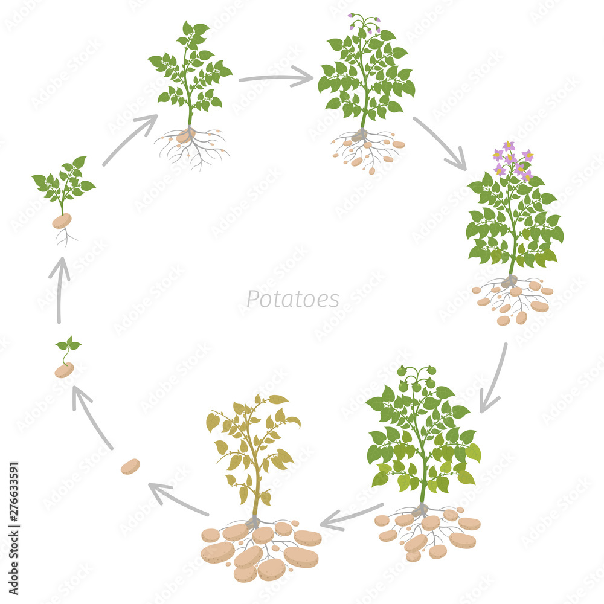

During the sprouting phase of the potato, it does not necesarily have to be in the ground. In this phase, sprouts grow out of an old potato, and it can be triggered by things like warm temperatures, exposure to light, and humidity. This is why potatoes are recommended to be stored in a cool, dry place. While potatoes in this stage are OK to eat in moderation, they can cause some bad side effects.
This is mainly a growth phase. To get to this phase, the potato has to be planted into the soil. After being planted, the potato will grow out leaves and root structures, like an average plant. They have a short appearance, and have normal root structures. The potato starts to actually "grow" in this stage, using photosynthesis.
In this stage, the potato is developing smaller potatoes. After the growth of a root system and enough leaves, the potato plant will start growing more tubers, AKA more potatoes. They are just starting to grow under the roots. This growth lasts until the first flowers appear.
Go to the the gallery to see potato flowers!
In the tuber growth stage, the potato plant fully focuses on producing new potatoes. It completely stops making new leaves, and while there are more flowers, it also stops making them. If you harvest during this stage, you will find small-medium potatoes ready to harvest.
This stage in the potato's life cycle is pretty self-explanatory. The potatoes now can be fully harvested, and the potatoes themselves will not get any bigger past this point. Afterwards, the plant starts wilting, since it has completed the cycle.